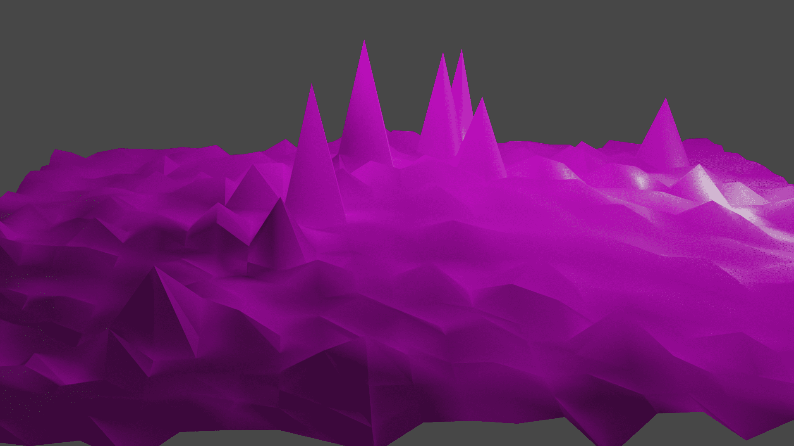
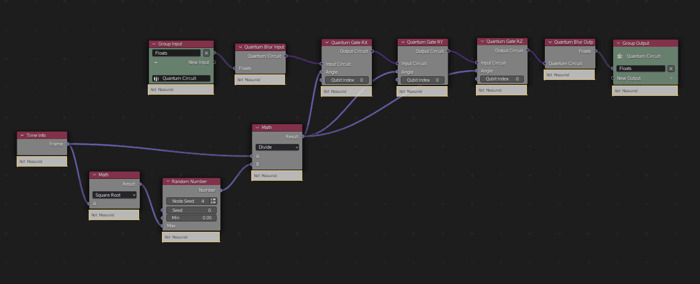

Tutorial 4 - Create and manipulate meshes using the Quantum Blur
In this tutorial, we will see how to implement a Quantum Blur circuit to create a mesh that gets deformed in an animation.
Note
Quantum Nodes allows you to work using different approaches to manipulate data and one of them is the Quantum Blur.
Based on Woottons's solution to manipulate vertices, vectors or matrices for example, it allows us to translate the input data into a quantum circuit.
We are then able to apply transformations to it and finally translate it back into coherent numeric data depending on the given input.
Example of output you can get by using a Quantum Blur:
{kind=link}
To organize this node tree better, we will divide it in 3 parts: the quantum circuit, the mesh manipulation and the “node tree call” which delegates the actions.
1 - Quantum circuit and Quantum Blur
First, we will create this quantum circuit using the Quantum Blur which translates everything into quantum data that can be manipulated with quantum gates.
Let's create the following circuit:
{kind=link}
- To do that, create a new tree.
- In the Subprograms tab, add a group input using floats which will be our input type.(The name at the bottom is the one used to call the subprogram after. You can choose what you want.)
- Add a Group Output.
{kind=link}
In the Quantum Nodes menu -> Quantum Blur, add a Quantum Blur Input and a Quantum Blur Output.
- Link the Group Input and Quantum Blur Input together and the Group Output and Quantum Blur Output together.
The gates that manipulate data will be placed between the Quantum Blur gates.
You can choose whatever gates you want.
In this example, we will use multiple gates and manipulate them using data from the scene such as the frame number.
- Add a RX, RY and RZ gates between the Quantum Blur Input and Output and link the circuit input-output.
{kind=link}
These gates need angles as parameters. We will use a random number depending on the frame number as the angle to get varying results.
- Add a Time Info node (gives the frame number), a Square Root node, a Random Number node and a Math divide node.
{kind=link}
- Link them together and link the result to each of the angle parameters in the gates.
The quantum circuit is done.
Once again, you can experiment with all those node and change them as you wish.
2 - The mesh data manipulation
This part of the program manipulates the mesh data using the quantum circuit outputs and the original data from the mesh to modify it.
You are free to use any kind of manipulation of the data as it is what will change the result.
- Create a new node tree.
- Add a Group Input using two float lists and a Group Output.
{kind=link}
The calculations depending on the quantum results we want to apply in this case are the following:
- If the quantum output number is negative, we assign a multiplier factor of -1.
- Otherwise, we assign 1.
Using these new numbers, we then multiply them with our original numbers from the vertices of the mesh.
Because we use float lists, we need loops to run through them.
- For the Sign Test node tree, add a Loop Input with the Subprograms tab, then a Compare node, a Switch node and the Loop Output (a float list).
{kind=link}
- For the Multiply node tree, add a Loop Input, then a Multiply node and the Loop Output (a float list).
{kind=link}
- Invoke these subprograms after the Group Input.
These nodes allow us to modify the original values with the ones we got in the quantum circuit output.
{kind=link}
With the aim of adding more randomness through the values of quantum outputs in the lists we create, we also added Math functions like a Multiply with the Absolute value of the list we got at the end of the Quantum Circuit.
{kind=link}
The mesh data node tree is now finished.
3 - The node tree
This part of the tree is the one that leads and delegates all the steps: choosing the mesh, invoking the subprograms, returning the output mesh…
- Add a Mesh Object Input and a Mesh Object Output.
The output type is vertices because this is what we want to modify.
{kind=link}
To be able to use the mesh, we need to separate its vertices into vectors depending on the axis.
Use a Separate Vector node to separate x, y, z.
Add a Combine Vector node before the Output as we will need them to be reunited at the end.
{kind=link}
Once our vectors are separated, we can use them and input them through our subprograms.
- Add an Invoke Subprogram node for every subprogram we call: the quantum circuit and the mesh data and link them.
{kind=link}
We are now done with the node tree.
- The last thing is to input the object you want in both the mesh object node and mesh object output node to see the results.
Note
To create an animation, the easiest way is to add keyframes in the timeline menu.
Add one keyframe for the location of the object before putting it as an input in the Mesh object output node.
Once the keyframe is set, you can then input your mesh and see the results.